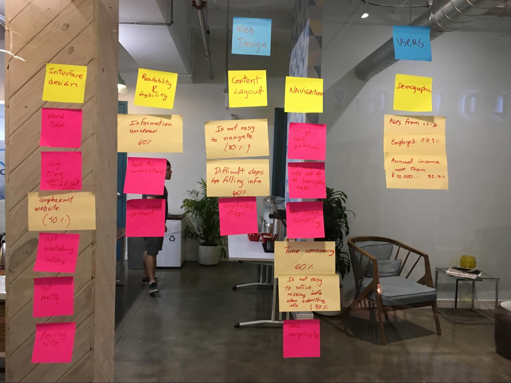

Timeline
3 weeks
Tools
Sketch, Google Forms, optimalworkshop.com, Flinto
Deliverables
User Research, Information Architecture, User Interface Design, Rapid Prototyping, User Testing
The customer
The Florida Department of Children and Families Automated Community Connection to Economic Self Sufficiency (ACCESS) is a non-profit organization that helps to promote strong and economically self-sufficient communities by determining eligibility for food, cash and medical assistance for individuals and families on the road to economic recovery.
The applications for this benefits are made online (http://www.myflorida.com/accessflorida) or by visiting one of their departments in person.
Project Description
The federal government is mandating that every agency and department improve its online services by a measurable amount. Simultaneously local governments are also trying to create better online experiences.
The Challenge
Although the web page is available and it's the recommended method to expedite the application process, its Departmental Offices are constantly overwhelmed by clients awaiting agents to carry out their applications. Their website seems to be too complicated.
ACCESS is seeking new ways to reach and engage their audience by improving the user experience of their site.
Defining Feature
Must haves
Citizens needs to apply for Assistance programs
Users
Individuals and families with economics needs
The Research
Research is always at the base of the solution; it allows us to generate knowledge about the user.
Survey
The surveys were shared on social networks and answered by 25 individuals who had used the website in the past.


User Interviews
For the interviews I went to their departments to find people directly related to the subject. I was able to interview five individuals, who were waiting to make their application for benefits with an agent.
Interview testimonials
- “The website is a disaster ,I don't know how it works”.
- “I can't understand what information are they asking for”
- ‘Very long process ,to much scrolling”
Affinity diagram
I looked for patterns in my research and organized similar responses and behaviors into groups, which allowed me to visualize trends and the relationships between each trend.
User Pain Points
Based on the information from the user research the following pain points were found:
Readability and Legibility
- Redundant content
- Excessive and confusing information
Navigation
- Too much scrolling
- Confusing progress bar (the user doesn't know when the process will end )
Interface design
- Time consuming process
- Missing information notification before completing the process
- Non-responsive website
The information also showed the need for a harmonious color change as well as a website with the ability to save the application in pdf format for future reference.
Problem Statement
The individuals and families with food, cash and medical assistance needs want an easy registration and application for benefits because they don't want to drive and wait in the Aceess Departments for someone to do it for them.
User personas
These personas were created from the behavior patterns obtained in the previous research


User Journey Map
It was necessary in order to summarize the information related to the user’s experience while trying to apply for benefits at different levels .
Information Architecture Techniques
Information Architecture was used for the organization and structuring of the website.
Card Sorting
According to the core content of the website ten people were given the task of organizing into categories
I used www.optimalworkshop.com to conduct the card sorting .This allowed me to know how I could organize the content and give it a hierarchical structure.
Documenting the information architecture with a Site map
This map was created with the results obtained by the card sorting to visualize how the content was going to be organized in the website, helping to define the goal and a purpose of every page.

Interaction design
Wireframing
I started planning and defining the information hierarchy of my design for the website.
Hand sketch wireframes

Concept Testing
The user navigated through the website trying to complete typical tasks while I was observing and taking notes in order to identify deficiencies.
The "terms and conditions" checkbox was unnoticed; it must be highlighted.
The time spent in the application process was 35 minutes faster than the original process, this objective was accomplished.
Mid fidelity Wireframes
Visual Design
Moodboard

Style Tile